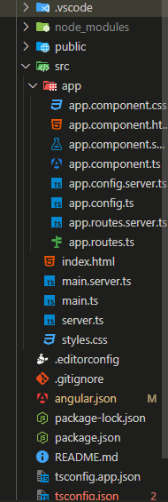

MON 3.1 : Apprendre les bases d'Angular
- MON
- 2024-2025
- temps 3
- vert
- Angular
- TypeScript
- Frontend
- HttpClient
- Dependency Injection
- Module
- Directive
- Pipe
- Kévin BERNARD
- Connaissances de ce qu'est un Frontend : 2/3 📶
- Connaissances de ce qu'est un Système de composants : 1/3 📶
SOURCES
- Vidéo Youtube de Zero To Mastery, What is Angular? | Angular Explained in 2 Minutes For BEGINNERS
- Vidéo Youtube de AltexSoft, Angular Basics, Pros and Cons Explained
- Site Le Guide Angular | Marmicode
- Vidéo Youtube de Programming with Mosh, Angular Tutorial for Beginners: Learn Angular & TypeScript
- Site de documentation d'Angular
- Une version française de la documentation d'Angular
POK & MON
Table des matières
- Introduction
- Qu'est-ce qu'Angular et quand l'utiliser ?
- Créer un projet Angular
- Comment ça marche ?
- Que sont les directives et les pipes ?
- Comment récupérer des données ?
- Conclusion
1. Introduction
Je fais ce MON pour apprendre un nouveau langage, j'aimerais avoir suffisamment de bases pour confortablement mettre Angular JS dans mon CV. Je me suis donc posé comme question :
Ce MON retrace ma démarche pour répondre à cette question. Je le fais pour un moi futur qui voudrait apprendre Angular ou revoir les bases.
J'ai utilisé le site Le Guide Angular | Marmicode parce que Arthur Louradou le mentionne dans son MON 3.1 : Angular.
2. Qu'est-ce qu'Angular et quand l'utiliser ?
Petite présentation
Il faut différencier Angular de Angular JS. Angular JS est la première version d'Angular sortie en 2010 écrite en JavaScript et Angular est la deuxième version sortie en 2016 réécrite en TypeScript. Angular JS est basé sur un système de model-view-controller et Angular sur un système de composants comme React.
Angular est un framework TypeScript open-source développé par Google :
- Il est utilisé par beaucoup d'entreprises dont des grosses entreprises comme Microsoft, Paypal et Samsung (surtout parce que d'abord développées en Angular JS, elles ont souhaité rester avec Angular plutôt que d'aller vers un tout nouveau framework)
- Il reste constamment à jour puisque que Google fait des mises à jour tous les 6 mois
Ce sont 2 raisons pour lesquelles il est intéressant de l'apprendre.
Quand utiliser Angular ?
J'ai comparé Angular à React et Vue pour savoir quand l'utiliser.
Les caractéristiques d'Angular:
- Complet
- Très verbeux
- Natif TypeScript
- Complexe à apprendre
Angular est utilisé quand on veut réaliser une application complexe de grosse taille surtout en entreprise grâce au cadre robuste qu'il a.
Petit mémo : Avec Angular c'est comme si on nous donnait une cuisine toute équipée (four, frigo, mixeur, batteur, grille pain, etc) quand on veut juste cuire des pâtes. C'est bien quand on veut monter un restaurant mais pas pour un repas simple et rapide.
3. Créer un projet Angular
Maintenant que je savais pourquoi et quand utiliser Angular. Je me suis demandé comment créer un projet Angular.
Installation
Pour installer Angular, il faut d'abord installer Node.js et npm (Node Package Manager) qui est un gestionnaire de paquets pour JavaScript.
Ensuite, on installe Angular CLI (Command Line Interface) qui est un outil en ligne de commande pour créer, développer et tester des applications Angular.
Enfin, on crée un nouveau projet Angular avec la commande ng new nom-du-projet.
npm install -g @angular/cli
ng new nom-du-projetOn a le choix entre plusieurs options : CSS, SCSS, SASS, LESS et la possiblité d'activer le SSR.
Et pour lancer le serveur de développement, on utilise la commande ng serve.
Pour plus de renseignement, les informations proviennent de la documentation officielle d'Angular
Structure d'un projet Angular
Ma première question a été de savoir comment s'organise un projet Angular ainsi que les commandes de base pour gérer le projet.

Ce que j'ai jugé bon de retenir :
- src : contient tous les fichiers de l'application et c'est là où l'on code
- src/app : contient tous les composants de l'application
- src/main.ts : point de départ de l'application, c'est là où l'application est lancée
On a plusieurs commandes de Angular CLI pour gérer le projet dont :
ng generate component nom-du-composant: pour générer un composantng generate service nom-du-service: pour générer un serviceng add nom-du-package: pour ajouter un package
Plus d'informations sur une documentation française d'Angular.
4. Comment ça marche ?
Je sais comment construire un projet Angular, où je vais coder et quels éléments vont me servir pour coder. Maintenant, je souhaite comprendre comment cela fonctionne, comment un page est construite.
Le composant racine est app.component qui est le composant principal de l'application. A ce composant, on peut ajouter une arborescence de composants enfants qui vont venir constituer les pages puis les éléments de ces pages.
Donc 1 page = 1 composant enfant de app.component composé de plein de petits composants.
Les composants
Un composant est une classe décorée par @Component qui contient le nom du composant (selector), le lien vers le HTML (templateUrl) et le CSS (styleUrls).
@Component({
selector: 'app-root',
templateUrl: './app.component.html',
styleUrls: ['./app.component.css']
})Un composant est organisé sous la forme d'un MVC avec 4 fichiers :
- Un fichier HTML et un fichier CSS pour la vue --> ce qui est affiché à l'utilisateur (nom-du-composant.component.html et nom-du-composant.component.css)
- Un fichier TypeScript pour le contrôleur et le modèle --> gère les données et les événements provoqués par l'utilisateur (nom-du-composant.component.ts)
- Un fichier de test pour tester si le composant marche bien (nom-du-composant.component.spec.ts)
Avec la commande ng generate component nom-du-composant, Angular génère automatiquement ces 4 fichiers et update le fichier app.module.ts pour ajouter le composant.
Ne sachant pas ce qu'est un module, j'ai cherché à comprendre son rôle.
Plus de détails sur les composants
Les modules
Un module est une classe décorée par @NgModule qui contient les composants, les directives et les pipes de l'application.
Autrement dit c'est un fichier qui regroupe des composants, directives et pipes.
@NgModule({
declarations: [
NomComponent,
HelloComponent
], // liste des composants, directives et pipes que le module regroupe
exports: [
NomComponent,
HelloComponent
], // liste des composants, directives et pipes que le module rend accessibles à d'autres modules
imports: [
BrowserModule,
], // liste des modules ayant des composants, directives et pipes utilisés par les composants, directives et pipes du module (ceux dans declarations)
})Un module est organisé sous la forme de 3 fichiers :
- Un fichier TypeScript pour le contrôleur et le modèle --> gère les données et les événements provoqués par l'utilisateur (nom-du-module.module.ts)
- Un fichier de test pour tester si le module marche bien (nom-du-module.module.spec.ts)
- Un fichier de routage pour gérer les routes de l'application (nom-du-module-routing.module.ts) --> par exemple, si on veut que l'URL /home affiche le composant HomeComponent
Plus de détails sur les modules
J'ai compris comment marche un projet Angular, on demande au module de charger le composant adéquat pour afficher la page. (C'est un processus hiérarchique où le module principal charge les modules enfants qui chargent les composants enfants).
Mais en en apprenant sur les modules, j'ai vu qu'il existait des directives et des pipes. Des termes qui reviennent souvent dans la documentation d'Angular mais que je ne connais pas.
5. Que sont les directives et les pipes ?
Les directives
Une directive est une classe décorée par @Directive qui permet de manipuler la vue/le DOM en ajoutant des attributs à des éléments HTML.
Il y en a 2 types :
- Les directives structurelles : elles modifient la structure du DOM en ajoutant ou en supprimant des éléments HTML (ngIf, ngFor, ngSwitch)
- Les directives d'attributs : elles modifient l'apparence ou le comportement d'un élément HTML (ngStyle, ngClass)
@Directive({
selector: '[appHighlight]'
})
export class HighlightDirective {
constructor(el: ElementRef) {
el.nativeElement.style.backgroundColor = 'yellow';
}
}Un exemple de directive qui change la couleur de fond d'un élément HTML en jaune. On va les utiliser pour ajouter des fonctionnalités à nos composants comme par exemple, si on veut que les éléments d'une liste soient surlignés en jaune.
<ul>
<li *ngFor="let item of items" appHighlight>{ item }</li>
</ul>Plus de détails sur les directives sur Le Guide Angular | Marmicode et dans la documentation Angular.
Les pipes
Un pipe est un outil qui permet de transformer les données affichés dans template HTML sans modifier les données dans le composant TypeScript. Les pipes prennent une valeur d'entrée, la transforment et retournent la valeur transformée.
Il existe des pipes prédéfinis dont les plus utiles sont :
uppercase: transforme le texte en majusculedate: transforme une date en une date formatéecurrency: transforme un nombre en une monnaieasync: transforme une promesse en une valeur
On peut également créer des pipes personnalisés qu'il faudra alors ajouter dans le module pour qu'ils puissent être utilisés par les composants du module.
Il y a plus de détails sur Le Guide Angular | Marmicode et
A partir de ce moment là, je savais comment construire une page, comment la structurer et comment ajouter des fonctionnalités à mes composants et filtrer les données affichées dans mon HTML. Mais je ne savais pas comment récupérer des données depuis mon HTML.
6. Comment récupérer des données ?
Comment sont gérées les données dans Angular ? Comment récupérer des données depuis un serveur ?
Les services
Les services sont des classes décorés par @Injectable qui permettent de récupérer des données depuis un serveur, de les manipuler et de les partager entre les composants.
Par convention, elles sont nommées : nom-du-service.service.ts.
Le service va créer une dépendance pour les composants qui vont l'utiliser (dépendance = quelque chose dont a besoin le composant pour fonctionner).
Le mécanisme qui permet l'échange de dépendances entre différentes parties de l'application (par exemple, service et composant) est appelé l'injection de dépendances.
L'injection de dépendances/Dependency Injection
Comment ça marche ?
Pour gérer l'échange de dépendance, l'injecteur vérifie qu'il n'existe pas déjà une instance de la classe service à fournir et si ce n'est pas le cas, il crée une nouvelle instance et la fournit. Et on a souvent dépendance = service.
Comment fournir une dépendance ?
On utilise le décorateur @Injectable pour indiquer que la classe est un service et avec le décorateur providedIn: 'root', on indique que le service est fourni à l'ensemble de l'application.
Il existe d'autres possibilités voir documention Angular.
@Injectable({
providedIn: 'root'
})
export class DataService {
fetchData() {
return ['item1', 'item2', 'item3'];
}
}Comment utiliser une dépendance ?
La documentation offre 2 méthodes, j'ai choisi la recommandée qui est de déclarer le service dans le constructeur du composant.
Ainsi quand le composant est créé, Angular va automatiquement injecter le service.
export class AppComponent {
items: string[];
constructor(private dataService: DataService) {
this.items = this.dataService.fetchData();
}
}Il y a plus d'explications dans la documentation d'Angular sur la Dependency Injection.
Maintenant je sais comment gérer les données dans Angular, comment récupérer les données dans le composant depuis le service mais je ne sais toujours pas comment récupérer des données depuis un serveur.
Les requêtes HTTP
Pour récupérer des données depuis un serveur, on utilise le service HttpClient qui permet de faire des requêtes HTTP.
On doit d'abord importer le module HttpClientModule dans le module principal de l'application.
import { HttpClientModule } from '@angular/common/http';
@NgModule({
declarations: [
AppComponent
],
imports: [
BrowserModule,
HttpClientModule
],
providers: [],
bootstrap: [AppComponent]
})Ensuite, on injecte le service HttpClient dans le service qui va récupérer les données sous forme d'observable.
@Injectable({
providedIn: 'root'
})
export class DataService {
constructor(private http: HttpClient) {}
fetchData() {
return this.http.get('url-du-serveur');
}
}Pour en apprendre plus sur les requêtes que l'on peut faire avec HTTPClient, c'est ici sur une version française de la documentation d'Angular.
Je n'ai pas eu le temps d'aller plus loin, notamment avec la notion d'observable.
Conclusion
Pour répondre à ma question :
Pour moi les bases d'Angular à maîtriser se divisent en 3 parties :
- Compréhension et implémentation du système de composants, modules, directives et pipes
- Gestion des données avec les services et l'injection de dépendances
- Récupération des données depuis un serveur avec les requêtes HTTP et les observables
Avec cela on peut récupérer les données, les manipuler et les afficher à l'utilisateur en fonction de ses actions ce qui est le but d'un frontend.
En parallèle, j'ai pu améliorer mes bases en Angular, je ne pense pas cependant avoir assez de connaissances pour dire que je maîtrise les bases d'Angular.